TPE : La réalité dans les jeux vidéos
Présentation
Présentation
"Les Sims 3" est un jeu de simulation et de gestion assez connu, mettant en scène des personnages humains que le joueur doit gérer de manière à développer leur situation économique, professionnelle et sociale afin de réaliser leurs souhaits à long et court terme. Ce jeu a été créé par Electronics Arts et développé par Maxis. Les Sims est un jeu en 3 volets, avec des packs additionnels permettant de débloquer des options supplémentaires. Il est sorti le 3 Juin 2009.
Ce qui a trait à l'humanité
Morphologie
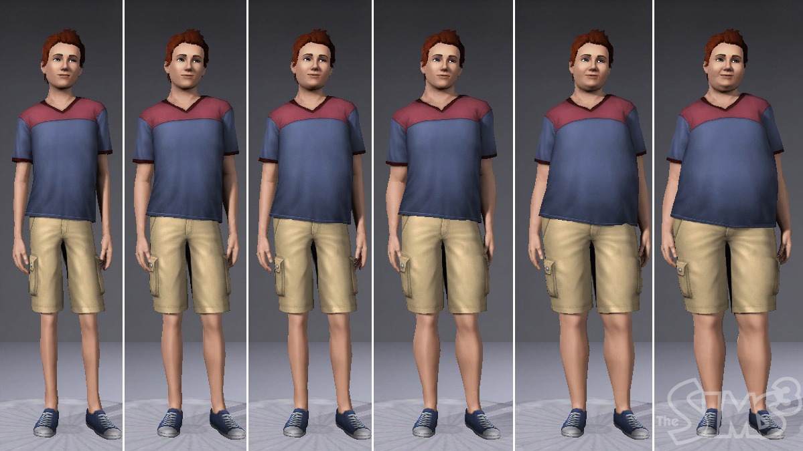L'intégralité des personnages du jeu sont humanoïdes et ont été clairement modélisés pour être le plus fidèle possible à la réalité. Nous devons au début du jeu choisir l'apparence physique et vestimentaire du Sim principal. Il est donc possible de modifier un nombre gigantesque de caractéristiques comme la corpulence du personnage, sa musculature, sa couleur de peau, ou encore même ses tatouages, ses boucles d'oreilles ou la longueur de son menton. Même après ce paramétrage poussé, il reste impossible de prévoir l'évolution du physique du personnage au cours du temps. Les mouvements des personnages à l'écran ne sont pas réalisés au hasard : ils ne se mettent par exemple jamais dans des situations anatomiquement impossibles pour l'homme.
L'aspect caractéristique de la vie humaine
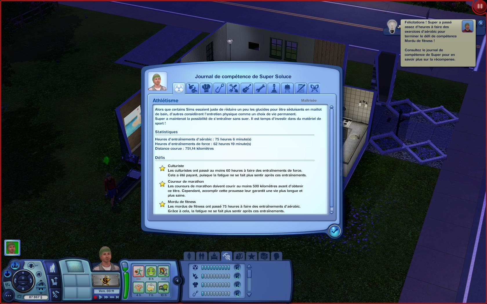On reconnaît également la plupart des caractéristiques de la vie humaine, telles que la possibilité de faire la cuisine, d'emprunter les moyens de transports, et beaucoup d'autres tâches quotidiennes. La plupart de ces activités correspondent à des compétences, gradées en plusieurs niveaux comme la cuisine, la mécanique, le nettoyage. On peut ajouter la présence de métiers que peuvent exercer les Sims (astronaute, policier, voleur...). Il n'est malgré tout pas possible de multiplier les emplois comme dans la réalité. Enfin, les Sims évoluent dans un monde social identique à celui de la réalité et entretiennent des contacts familiaux, professionnels ou encore amoureux.
La construction d'une maison
Comportement humain, caractère et émotions...
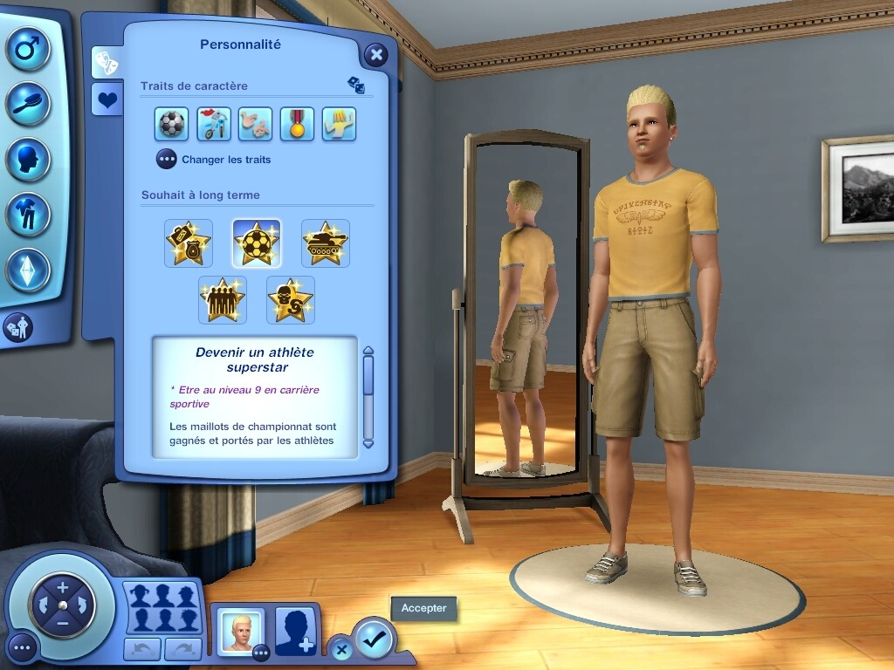Chaque personnage présente un caractère différent. Ceux-ci sont paramétrables au début de la partie et font que le personnage réagit de telle ou telle manière devant les différentes situations auxquelles il peut être confronté. Si par exemple un objet gêne le passage, il peut devenir énervé s'il a le trait de caractère Névrosé ou bien se retrouver démoralisé s'il est étourdi et devenir joyeux pendant une fête s'il est Excité. Le caractère des Sims non jouables avec lesquels notre personnage peut intéragir est en général choisit par le studio de développement ou généré de façon aléatoire pour ceux d'entre eux les moins importants.
Le cycle de vie du personnage
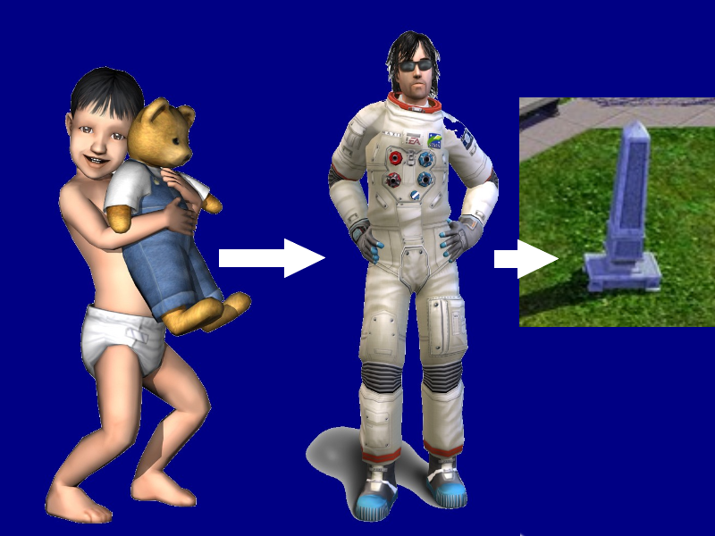Le cycle de vie réel du personnage est respecté dans le jeu, puisque le personnage est tout d'abord bambin, puis enfant, adolescent, jeune adulte, adulte, et enfin vieillard. à l'inverse, ce cycle de vie est relativement court par rapport à la vitesse de déroulement du jeu (l'enfance ne dure environ qu'une semaine). Il n'y a aucune évolution présente entre les étapes intermédiaires et il est possible de démarrer le jeu à partir d'une certaine étape du cycle de vie.
L'utilisation d'un système économique
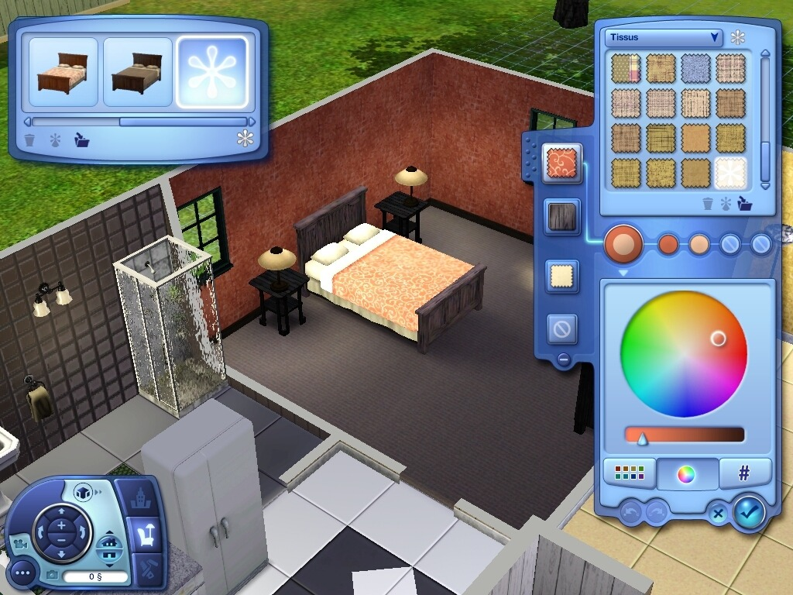"Les Sims 3" présente aussi un système économique dont monnaie est le Simflouz, simbolisé par un "§". Cet argent virtuel permet d'acheter des matériaux de construction, des objets pour remplir la maison dans laquelle vie le Sim et des services (à préciser). Cet argent peut est en partie gagné par le Sims lorsqu'il travaille, qu'il vole ou qu'il vend (autre moyens ?). Cet argent est la base et l'intérêt du jeu : le but est d'enrichir son personnage.
La reproduction des lois physiques
La Pesanteur
 Ce jeu respecte la loi de la gravité dans la plupart des animations. Dès qu'un personnage saute, il retombe automatiquement ou encore lorsqu'un Sim plonge dans une piscine, il retombe dans l'eau et ne marche à sa surface, tout comme il est totalement impossible qu'il reste en suspension dans l'air.
Ce jeu respecte la loi de la gravité dans la plupart des animations. Dès qu'un personnage saute, il retombe automatiquement ou encore lorsqu'un Sim plonge dans une piscine, il retombe dans l'eau et ne marche à sa surface, tout comme il est totalement impossible qu'il reste en suspension dans l'air.
Les collisions et les interactions
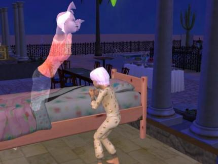Malgré la loi de la gravité, le jeu ne respecte pas toujours la loi des collisions et des réactions. En effet, quand une voiture veut en doubler une autre, elle passe à travers au lieu de passer sur l'autre file comme en réalité. De plus, lorsque la porte d'un objet est ouverte, elle peut passer au travers d'un mur qui aurait la possibilité de se trouver à proximité.
Perspectives, reflets et jeux de lumière
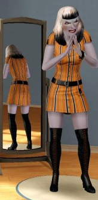L'effet de perspective est respecté dans le jeu afin d'augmenter le réalisme de cette vision 3D, puisqu'il s'agit de décors et de graphismes essentiellement en 3 dimensions. à la manière d'une image filmique, les décors présentent un point de fuite et ce qui est plus loin est plus petit et plus orienté vers ce point. Ces décors ne sont donc pas plats, et l'on peut diriger, grâce à la souris, le point de vue. Pour terminer, les reflets sont en règle générale gérés. Si par exemple un Sim se place devant un miroir, ce que l'on peut observer dès le début du jeu, lors de la création de celui-ci, il est possible de voir son reflet dans le miroir. Par contre, cela ne se produit pas avec la surface de l'eau. Les jeux de lumières sont donc également présents, puisque les objets et les murs sont des sources d'ombres. Celles-ci sont différement placées en fonction de la position du soleil. Ainsi, deux fenêtres placées selon des orientations différentes laisseront entrer plus ou moins la lumière en fonction de leur placement.
Le déplacement des ombres
Un environnement de jeu toujours plus réaliste
Les paysages et la carte du monde
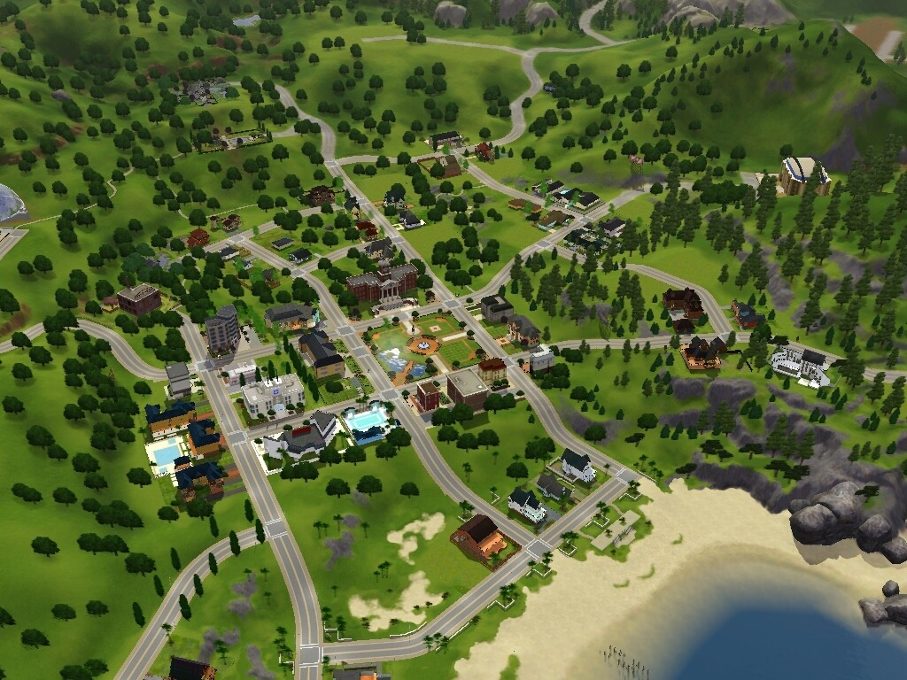Les paysages du jeu sont en 3 dimensions, ainsi que la carte, qui d'ailleurs n'est pas une carte du monde, mais une carte de la ville. L'environnement dans lequel évolue le Sim est très riche. De plus, la carte de la ville présente un certain relief (elle comporte des montagnes, des lacs,...)
Le cycle Jour/Nuit, l'évolution de l'environnement, les conditions météorologiques
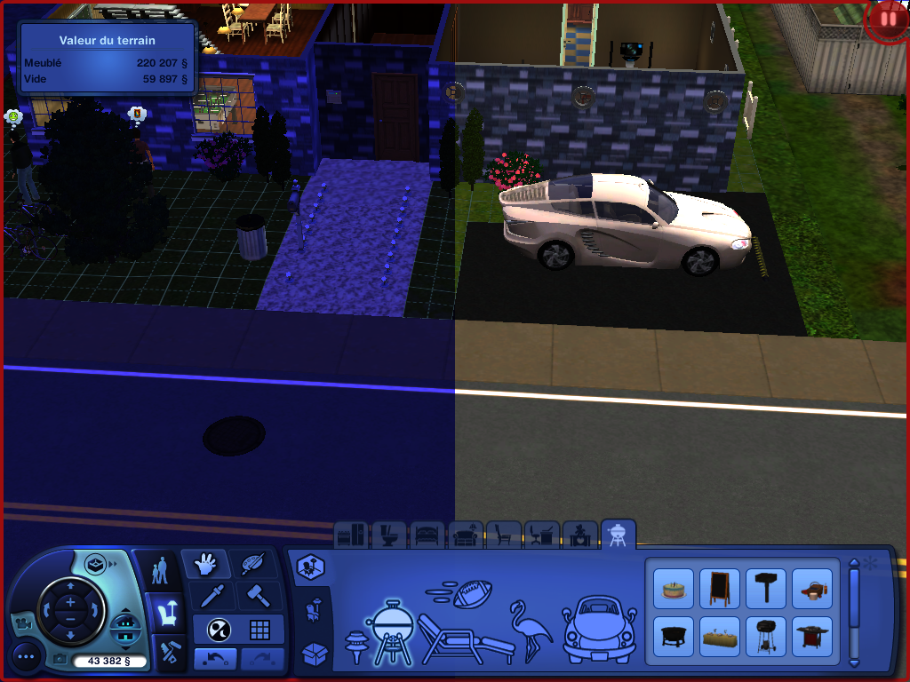En outre, il présente un cycle Jour/Nuit, puisque l'on a, dans l'ordre : la nuit, l'aurore, le jour, le crépuscule. En revanche, ce cycle se déroule toujours aux mêmes heures. On voit également que les objets sont très souvent soumis au cycle du temps. Par exemple, de la nourriture laissée trop longtemps sur un support fini par périmer et sentir mauvais. Enfin, les conditions météorologiques sont inexistantes, et le temps du jeu reste toujours ensoleillé.
Les bruitages l'ambiance sonore
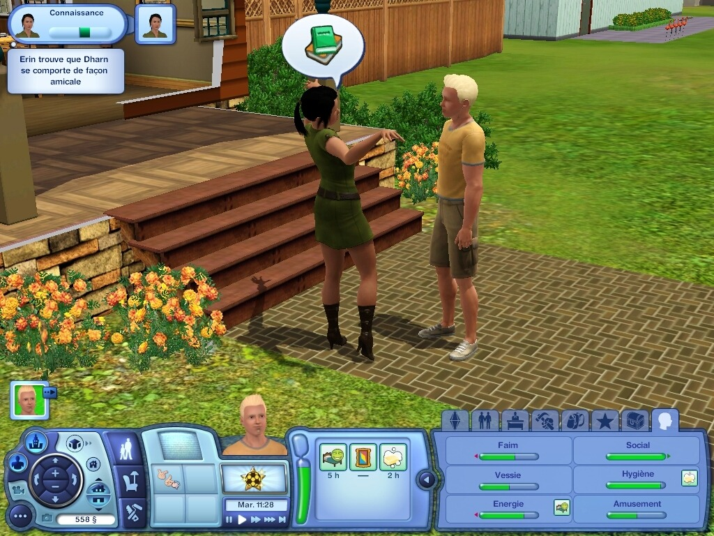L'ambiance sonore est composée d'une musique de fond, qui est une musique prédéfinie. Elle ne change que lorsque le Sim allume la radio, ou qu'il se passe quelque chose d'important (l'arrivée d'un bébé, un incendie, un voleur,...). De plus, les personnages s'expriment entre eux par le biais d'un langage appelé le Simlish, qui est un langage imaginaire, composé de navajo (une langue parlée dans le Sud des états-Unis), de français, d'anglais, de finnois, d'ukrainien, de tagalog (langue philippine) et de latin. Au niveau des bruitages, seuls les objets produisent de réels bruits (la chasse d'eau, l'ordinateur,...)
Les graphismes de plus en plus réalistes
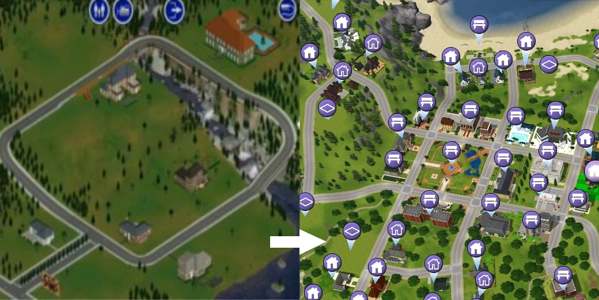Depuis le premier volet du jeu, "Les Sims", au dernier volet en date, "Les Sims 3", l'amélioration graphique est nettement visible. En effet, dans le premier jeu, la carte de la ville restait très basique et n'était composée que d'un seul quartier. De plus, au fil du temps, le jeu a proposé des outils de personnalisation encore plus développés. Cela cause, en contrepartie, des coûts assez importants, de manière à se procurer une carte graphique suffisamment puissante pour utiliser le jeu tout en restant à l'abri des "bugs".
Autres
Les codes de triches
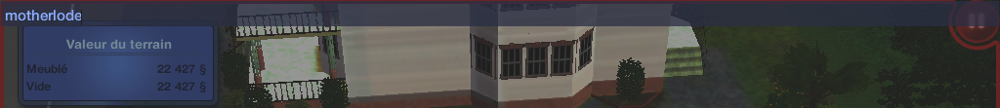Enfin, des codes de triche peuvent être utilisés. Grâce à ces codes, le joueur peut faire gagner de l'argent au personnage facilement, lui approprier plus de terrain, déplacer des objets normalement non déplaçables (la boîte au lettres, et même des personnages), et de satisfaire tous les besoins, ainsi que de nombreuses autres possibilités. Cela rend le jeu beaucoup moins réaliste. (dans la vraie vie, l'argent ne tombe pas du ciel).
Ordre de lecture suggéré
- Page d'accueil
- Questions / Réponses
- Morrowind
- Les Sims 3
- Le récapitulatif
- L'interview d'un professionel du jeu vidéo
- Bilan de nos recherches
Plan de la page
- Ce qui a trait à l'humanité
- La reproduction des lois physiques
- Un environnement de jeu toujours plus réaliste
- Autres
Site créé pour l'épreuve de TPE par Alexis Launay, Kilian Ollivier, Grégoire Coulombel et Flavien Lécuyer.


{kind=link}
{kind=link}
{kind=link}
{kind=link}
{kind=link}
{kind=link}
{kind=link}
{kind=link}
{kind=link}
{kind=link}
{kind=link}
{kind=link}
{kind=link}